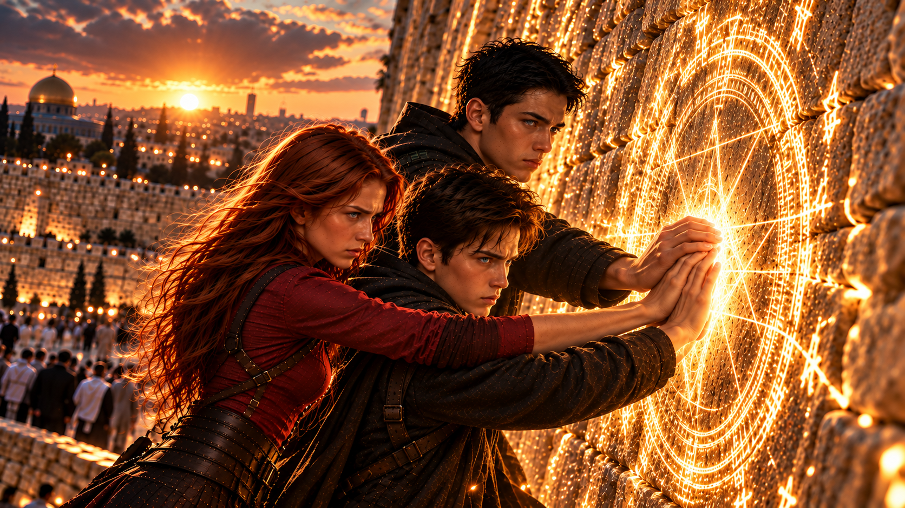

WHITE MAGIC ART STUDIO
第十四章
寇德薩拉
鹽湖城．東湖地下教會
戰鬥結束不到十分鐘，羅尼與潔西卡便帶領其餘還能戰鬥的聖術師前往地面，確認外界的情況。
地下教會終於恢復安靜。
然而，沒有人真正感到安全。
傑西的辦公室裡，柴克、克里斯與安娜站在書桌前。三人各自換上便於戰鬥的衣服，誰也沒有時間好好休息。
「所以，」克里斯雙手抱胸，「你把我們三個叫來，是有什麼事？」
傑西沒有立刻回答。
他走向書櫃，蹲下身，從最底層抽出一本厚重的古籍。封面早已磨損，幾乎辨認不出原本的文字。
他將書放上桌面，小心翻開，從書頁間取出幾張泛黃的手稿。
克里斯原本還有些不耐煩。
直到看見手稿上的圖案，他的神情突然變了。
「……不可能。」
柴克看向他。
「什麼？」
克里斯拿起其中一張手稿。
紙上描繪著一把古老的長劍，劍柄中央刻有六芒星圖案，周圍則寫滿柴克完全看不懂的文字。
「安德烈之劍……」
克里斯低聲說。
柴克愣了一下。
「安德烈？」
他指了指自己。
「我們家的安德烈？」
「不是因為我們家才叫這個名字。」
克里斯仍盯著手稿。
「剛好相反。」
他抬起頭。
「安德烈家族的名字，就是從它而來。」
柴克重新望向那把劍。
「所以……它到底是什麼？」
這次回答的是傑西。
「初代雷翼的術器。」
房間頓時安靜下來。
「根據傳說，那是拉比親自交給初代雷翼的武器。」
柴克看著手稿。
不知從什麼時候開始，每次聽見「雷翼」這兩個字，他的心情都會跟著沉重幾分。
「所以，你現在拿這個給我看……」
「因為它可能是我們目前唯一的機會。」
柴克抬起頭。
傑西迎上他的目光。
「對付魔神的機會。」
克里斯皺起眉。
「你確定它真的存在？」
「不確定。」
傑西回答得十分幹脆。
克里斯怔了一下。
「不確定？」
「我從來沒見過。雷沒有，你父親也沒有。」
柴克看著他。
「所以，它只是一個傳說？」
「是。」
「然後你打算讓我們去找一把可能根本不存在的劍？」
「是。」
柴克張了張嘴，最後只吐出一口氣。
「……至少你很誠實。」
傑西苦笑。
「我們現在已經沒有時間假裝自己掌握了一切。」
他翻開另一張手稿。
紙上畫著一座古老的建築，輪廓莊嚴而陌生。
「根據現存的紀錄，安德烈之劍最後一次出現的地方，叫做——」
「寇德薩拉。」
克里斯猛然抬頭。
「寇德薩拉？」
這次連安娜都有了反應。
「傳說中的聖域？」
柴克看看哥哥，又看看妹妹。
「看來又是只有我不知道的事。」
安娜輕輕拍了拍他的肩。
「你最近應該慢慢習慣了。」
柴克無奈地看她一眼。
傑西將手稿推向三人。
「關於寇德薩拉的紀錄非常有限。有人說它是一座聖殿，也有人認為它根本不屬於我們所在的世界。」
他指向其中一行古老文字。
「但有一件事，幾乎所有記載都一致。」
三人同時看向他。
「入口只會為三個人開啟。」
「三個？」柴克問。
「而且其中至少一人，必須是翼聖術師。」
傑西抬起眼，望向柴克。
柴克的表情慢慢僵住。
「……喔。」
安娜忍不住笑了。
「現在知道為什麼找我們三個了吧？」
「我原本還希望你們是在說別人。」
克里斯沒有加入兩人的對話。
他仍仔細閱讀手稿。
「為什麼一定要三個人？」
「不知道。」
「進去以後會遇到什麼？」
「不清楚，但據說會遇到三個試煉。」
「安德烈之劍確定還在裡面？」
「也不知道。」
克里斯終於放下手稿。
「傑西。」
「嗯？」
「你知道的事情是不是太少了？」
「非常少。」
傑西坦然承認。
柴克看著桌上那些古老的圖畫，心裡越發沒底。
但傑西接下來的話，讓三兄妹都安靜下來。
「所以，我要你們自己決定。」
柴克抬頭。
「什麼意思？」
「這不是命令。」
傑西的目光依序掃過三人，最後停在柴克身上。
「尤其是你，柴克。」
「你才剛知道父親當年犧牲的真相，今天清晨又差點被魔神利用。現在甚至連這座教會，都已經不再安全。」
他停頓片刻。
「沒有人有資格因為你是雷翼，就要求你立刻替所有人解決問題。」
柴克沒有回答。
如果是幾天前，他大概會毫不猶豫地拒絕。
籃球、學校、查德、母親。
那些才是他熟悉的生活。
直到不久前，他都還以為自己最大的煩惱，不過是該如何面對哥哥的管教，以及下一場比賽。
可是現在，瑞秋仍昏迷在密室裡。
亞當才剛從黑霧中撿回一條命。
查德下落不明。
雷叔叔甚至可能正獨自前往魔神所在的地方。
而那個東西——
正在使用父親的身體。
柴克低下頭，看著自己的雙手。
幾十分鐘前，他才第一次在真正的戰場上拉開弓弦。
那時候，他沒有突然覺醒雷翼的力量，也沒有因此明白自己的使命。
他只是看見有人需要幫忙。
然後做了自己能做的事。
「如果我不去，」柴克終於開口，「還有別的方法嗎？」
傑西沒有回答。
但柴克已經明白。
他緩緩吐出一口氣。
「好。」
克里斯立刻轉向他。
「柴克。」
「我知道。」
「你不知道。」
柴克抬起眼。
「你一定有很多風險想告訴我。」
「因為這件事真的很危險。」
「我知道，哥。」
這一次，柴克沒有迴避他的目光。
「但我不是為了那把劍才去。」
克里斯微微一怔。
「查德還在外面。媽還躺著。雷叔叔也不知道去了哪裡。」
柴克停了一下。
「還有爸爸。」
那兩個字讓房間再次陷入沉默。
「我不知道那具身體裡還剩下什麼。」
他的聲音低了下來。
「但我不想讓魔神繼續用他的臉做那些事。」
克里斯靜靜看著弟弟。
他知道柴克並沒有真正理解這趟旅程可能面臨的危險。
可他也知道，眼前的弟弟已經不再只是想證明自己有多厲害。
良久，克里斯嘆了口氣。
「你真的很麻煩。」
柴克勉強笑了笑。
「可能是遺傳吧。」
克里斯沒有接話。
他轉向傑西。
「我去。」
安娜立刻開口。
「那還需要問我嗎？」
柴克看向她。
「妳其實可以留下來。」
「為什麼？」
安娜瞇起眼睛。
柴克看着她，最後搖頭。
「……沒什麼。」
「很好。」
「我已經把你們進去後可能所需要的資料整理成這份手稿，我能額外做的頂多翻譯一些拉丁文傳說，剩下的還得靠你們自己。」
傑西把手稿遞給克里斯。
他望著眼前的三兄妹。
胸口忽然湧上一股難以言喻的情緒。
三個人。
十五年前，也曾經有三個年輕人並肩站在一起。
詹姆斯。
雷。
還有自己。
那時候，他們也以為只要三個人在一起，就一定能找到辦法。
只是最後，回來的只有兩個人。
傑西垂下眼，將那段回憶壓回心底。
這一次，他希望結局能夠不同。
「那我們怎麼去？」柴克問。
克里斯拿起手稿。
「紀錄裡提到，寇德薩拉的入口曾經出現在耶路撒冷。」
柴克愣住。
「等一下。」
他指了指腳下。
「我們現在在猶他州。」
「嗯。」
「而耶路撒冷在……」
「以色列。」安娜回答。
「我知道在哪裡！」
柴克轉頭看她。
「我是問，我們要怎麼過去？」
傑西沒有說話。
但柴克很快注意到，他的手指間開始浮現細微的紫色雷光。
柴克的表情頓時變了。
「不。」
傑西微微一笑。
「可以。」
「不不不……」
紫色雷電開始沿著書房地板蔓延。
柴克不由自主地後退一步。
「我不喜歡你現在的表情。」
克里斯也立刻明白傑西的打算。
「傑西，距離太遠了。」
「我知道。」
「你之前從紐約把我們帶回來，就已經——」
「放心，我的『紫電』沒有失誤過。」
傑西打斷他。
「而且，我只負責把你們送到入口附近。」
「只？」
克里斯難以置信地看著他。
「你把跨洲傳送說得這麼簡單？」
「美國聖術會首席雷之聖術師，總得有點本事。」
「這不是本事的問題！」
傑西的笑容漸漸收斂。
「克里斯。」
克里斯停住。
「外面的惡魔已經開始躁動，魔神也正在行動。」
傑西的語氣變得嚴肅。
「如果還讓你們搭飛機過去，沒有人知道這段時間還會發生什麼事。」
克里斯握緊拳頭。
他明白傑西說得對。
但理解，不代表他能夠安心。
「那你呢？」
安娜突然問。
「我們離開以後，你打算做什麼？」
傑西沉默片刻。
「找到你們的叔叔。」
柴克抬起頭。
傑西望向三人。
「然後想辦法阻止那個混蛋做傻事。」
沒有人笑。
因為他們都知道，這一次，雷很可能真的不打算回來。
「準備好了嗎？」傑西問。
柴克看向哥哥。
克里斯伸出手。
「抓緊。」
安娜立刻握住他的手。
柴克望著兩人，遲疑了一瞬，才伸出自己的手。
三隻手緊緊握在一起。
傑西看著這一幕，眼神微微一動。
「很好。」
紫色雷光從三人腳下升起。
就在光芒即將吞沒他們時，柴克突然想起一件事。
「等等！」
「怎麼了？」
「我們的護照——」
轟——！
紫雷瞬間吞沒整間書房。
三兄妹的身影消失在耀眼的電光之中。
片刻後，雷光逐漸散去。
辦公室裡只剩傑西一人。
他踉蹌了一步，急忙伸手撐住桌面。
急促的呼吸在安靜的房間裡格外清晰。
遠距離傳送帶來的負荷，遠比他剛才表現出來的嚴重。
更何況，幾分鐘前，他才剛在中央會堂耗費大量體力。
傑西低著頭，閉上眼睛。
「拉比。」
他輕聲禱告。
「求祢與他們同行。」
過了片刻，他重新睜開眼。
拿起掛在椅背上的外套，走向門口。
「至於那個笨蛋……」
紫色雷光再次亮起。
「我自己去把他帶回來。」
＊
耶路撒冷
風聲。
猛烈的風聲。
柴克睜開眼睛。
第一個念頭是——
天空怎麼在下面？
第二個念頭才是——
不對。
是他在天上。
「啊啊啊啊啊——！」
三兄妹正從高空急速墜落。
「傑西——！」
柴克在狂風中怒吼。
「這就是你說的入口附近嗎——！」
「柴克！抓住我的手！」
克里斯奮力伸出手。
柴克立刻抓住他。
另一側，安娜也緊緊握住克里斯的手腕。
翡翠色程式碼迅速沿著三人的手臂擴散。
「不要放開！」
克里斯大喊。
大量數據在他們周圍交織，形成一道半透明的屏障。
下一秒——
砰！
三人重重墜入一片草地。
綠色屏障在接觸地面的瞬間吸收衝擊，隨即崩解成無數光點。
柴克仰躺在草地上，一動也不動。
安娜喘著氣，轉頭看他。
「你還活著嗎？」
柴克緩緩舉起一根手指。
「我正在考慮，回去以後要不要找傑西算帳。」
「那就是還活著。」
克里斯坐起身，確認兩人都沒有受傷後，才從懷裡取出手稿。
遠方，城市在夕陽下綿延展開。
古老的石牆與現代建築交錯，暖金色的光芒覆蓋在一座座建築上。
柴克也慢慢坐了起來。
「所以，這裡真的就是……」
「耶路撒冷。」
克里斯回答。
柴克環顧四周。
這幾天發生的事，早已超出他原本能夠想像的範圍。
如今就算突然被扔到世界另一端，他似乎也沒有多少力氣驚訝了。
「好吧。」
他撐著膝蓋站起來。
「那我們去找那個寇……」
他停住。
「寇……」
安娜轉頭看他。
「你敢講錯，我就把你丟回天上。」
「寇德薩拉。」
柴克立刻回答。
「我知道。」
三人稍作整理，便依照手稿上的指引出發。
經過一段路程，他們終於來到一面古老的石牆前。
牆面由巨大的石塊堆砌而成，歲月在上面留下深淺不一的痕跡。
四周聚集著許多人。
有人靜靜站立，有人低聲禱告，也有人將寫好的紙條塞入石縫。
柴克抬頭望著那面牆。
不知道為什麼，真正站在這裡以後，他反而安靜下來。
「就是這裡？」
他低聲問。
「手稿上是這麼寫的。」
克里斯展開紙張。
「『凡持有拉比之翼者，將手置於哭泣之牆。』」
柴克看向他。
「我？」
「你。」
「確定？」
「除非你看見這裡還有第二個雷翼。」
柴克低頭看著自己的右手。
以前，這隻手只是用來投籃、拉弓，以及寫那些他根本不想寫的作業。
如今，所有人卻告訴他，這隻手能夠開啟一座存在於古老傳說中的聖域。
「如果沒有反應呢？」
他問。
克里斯沒有立刻回答。
柴克抬起頭。
「如果我根本不是你們以為的那個人呢？」
安娜站在一旁，沒有催促。
克里斯則慢慢收起手稿。
「那就沒有反應。」
柴克愣了一下。
「就這樣？」
「不然呢？」
克里斯看著他。
「你還是我弟弟。」
柴克沒有說話。
「我們再想別的方法。」
克里斯說。
「所以，先試試看。」
柴克低頭笑了一下。
「你最近講話正常很多。」
「我可以收回。」
「不用。」
柴克走向石牆。
他緩緩抬起右手，停在距離石面不到幾公分的地方。
腦海裡，無數畫面接連浮現。
父親。
那個使用父親身體的魔神。
雷叔叔。
母親。
查德。
最後，他深吸了一口氣，將手掌貼上石牆。
沒有雷聲。
沒有爆炸。
起初，什麼都沒有發生。
柴克的心慢慢沉了下去。
然後——
嗡。
一道微弱的金光，從他的掌心下方亮起。
柴克睜大眼睛。
細小的金色紋路沿著古老石面緩緩延伸，逐漸向四周擴散。
彷彿某種沉睡了無數歲月的力量，終於再次甦醒。
「克里斯……」
「我看到了。」
克里斯迅速展開手稿。
「接下來呢？」柴克問。
「念出名字。」
柴克吞了口口水。
閉上眼睛。
「寇德薩拉。」
金光依舊停留在原處。
沒有任何變化。
柴克睜開眼。
「沒用。」
克里斯皺眉，再次仔細查看手稿。
「不對……後面還有一句。」
安娜靠了過來。
「寫了什麼？」
克里斯緩緩念出：
「『三位一體的心志，將成為推開聖域之門。』」
柴克轉頭看他。
「這是什麼意思？」
三人沉默了幾秒。
安娜忽然走上前，將自己的手覆在柴克手背上。
柴克一怔。
「妳知道怎麼做？」
「不知道。」
「那妳——」
「反正需要三個人。」
安娜看著他。
「總比讓你一個人試合理吧？」
克里斯望著兩人。
片刻後，他也走上前，將手覆在最上方。
柴克看著哥哥與妹妹。
「所以我們現在要做什麼？」
「不知道。」
克里斯回答。
柴克終於忍不住笑了。
「你今天好像說了很多次不知道。」
「閉嘴。」
「我只是覺得很難得。」
「柴克。」
「好啦。」
柴克重新面向石牆。
三隻手，緊緊疊在一起。

這一次，他沒有再想自己是不是合格的雷翼。
也沒有想自己究竟能不能成為所有人期待的那個人。
他只知道——
克里斯在這裡。
安娜也在。
而他不是一個人。
柴克閉上眼睛。
「寇德薩拉。」
轟——！
金光瞬間爆發。
柴克猛然睜眼。
整面石牆上的紋路同時亮起，一道巨大的圓形印記，以三人的手掌為中心迅速展開。
周圍的空間開始扭曲。
「克里斯！」
「不要放手！」
三人的手握得更緊。
下一秒，一股難以抗拒的力量從石牆另一端傳來。
金光吞沒了視野。
三兄妹的身影，同時消失。
石牆上的光芒逐漸消退。
古老的石面恢復原狀。
彷彿什麼都沒有發生。
＊
紐約
天空早已失去原本的顏色。
濃重的黑暗籠罩著整座城市。
雷懸浮在高樓之間。
黑色菱形晶體「阿法」靜靜停在他身旁，金色電流沿著晶體表面不斷跳動。
下方街道，大片黑霧正在移動。
不。
現在的雷已經知道。
那根本不是霧。
而是一群古老的惡魔。
牠們彼此交疊、聚集，從遠處望去，才像是一片正逐漸吞噬城市的黑色浪潮。
雷握緊拳頭。
十五年。
他守了十五年。
守著瑞秋。
守著克里斯。
安娜。
還有那個從小什麼都不知道的孩子。
因為詹姆斯要他這麼做。
——照顧他們。
那是哥哥留給他的最後一件事。
他一直以為，自己做得到。
直到今天早上。
他再次看見那張臉。
再次聽見那個聲音，叫出自己的名字。
「雷。」
明明知道那不是哥哥。
可聽見那個聲音時，他仍有一瞬間，幾乎忘了自己面對的是什麼。
十五年的時間，並沒有讓他忘記詹姆斯。
反而讓那份思念，成為一種無法碰觸的傷口。
「……混蛋。」
雷低聲說。
不知道是在罵魔神，還是在罵自己。
就在這時，遠處突然傳來一聲雷鳴。
不是天空中的雷聲。
而是聖術。
雷猛然抬頭。
數個街區外，一道微弱的電光在黑暗中閃過。
下一秒，阿法高速旋轉。
雷化作一道金色雷光，俯衝而下。
街道中央，一名年輕的雷之聖術師正遭到數頭惡魔包圍。
他手中的黑金鎖鐮不斷釋放電流，卻已經明顯力竭。
其中一頭惡魔趁他分神，從背後猛然撲來。
轟——！
金雷從天而降。
惡魔瞬間被轟飛。
年輕人猛然回頭。
雷已經落在他身旁。
阿法懸浮在肩側，數道金色雷電同時射出，逼退周圍的惡魔。
「還能走嗎？」雷問。
年輕人喘著氣。
「可以。」
「名字。」
「我姓波頓。」
「家人呢？」
波頓愣了一下。
「我有兩個弟弟。他們是雙胞胎。」
聽見「雙胞胎」三個字，雷的目光微微一動。
「在哪？」
「波士頓。」
雷看了他一眼。
「去找他們。」
波頓怔住。
「可是這裡——」
「你留在這裡，也改變不了現在的局勢。」
雷的語氣平靜而堅定。
「去找你的家人。」
「如果沿路遇到倖存者，就帶他們前往還有聖術師駐守的教堂。」
波頓握緊手中的術器。
「那你呢？」
雷抬起頭。
曼哈頓深處，黑暗最濃重的地方。
他知道那裡有什麼。
「我有我要找的人。」
波頓順著他的視線望去，臉色頓時變了。
「那裡？」
雷沒有回答。
「那些黑霧就是從那個方向出現的。」
波頓低聲說。
「不只是那些怪物。所有惡魔都像瘋了一樣，整座城市到處都是牠們。」
他的聲音微微發抖。
「先生……」
「這到底是怎麼回事？」
雷沉默片刻。
「我不知道。」
波頓怔住。
「連你也不知道？」
「嗯。」
波頓抬頭望著被黑暗覆蓋的天空。
「那我們……真的有辦法贏嗎？」
雷看了他一眼。
這個問題，讓他想起十五年前的自己。
那時候，他也曾站在哥哥身旁，面對一個根本不可能戰勝的敵人。
他記得那份恐懼。
也記得詹姆斯始終沒有退後。
雷重新望向眼前的年輕人。
「不知道。」
波頓愣住。
雷繼續說：
「但不知道能不能贏，跟現在該不該做，是兩回事。」
波頓靜靜看著他。
雷伸手拍了拍他的肩膀。
「去找你弟弟。」
這一次，波頓點了點頭。
「好。」
他轉身，朝街道另一端跑去。
雷站在原地，直到確認那道身影消失在街道盡頭，才重新抬起頭。
曼哈頓深處。
那張熟悉的臉，還在等著他。
阿法緩緩浮到掌心前方。
金色雷光逐漸增強。
「哥。」
雷輕聲開口。
周圍沒有任何人。
十五年來，他很少再這樣叫出這個稱呼。
「我知道那不是你。」
他停了一會兒。
「我知道。」
像是仍需要說服自己。
雷閉上眼睛。
再次睜開時，所有情緒都已被壓回眼底。
「所以……」
他望向黑暗深處。
「我會把你的身體帶回來。」
金雷驟然爆發。
雷正要沖天而起，腦海中卻忽然浮現柴克的臉。
那個孩子看著自己，認真地說——
謝謝你守著我們。
雷的動作停了一瞬。
十五年前，他答應詹姆斯，要保護他的家人。
這些年，他始終將自己當成那個必須站在前面的人。
無論發生什麼事，都不能讓他們受到傷害。
可柴克的話，讓他現場真正意識到——
他守護的那個家，從來不只是詹姆斯留下來的責任。
那也是他的家。
而那個家裡，也包括他自己。
雷低頭望著掌心前方的阿法。
原本緊握的拳頭，慢慢鬆開。
「……真麻煩。」
他輕聲說。
這一次，語氣裡少了幾分決絕。
下一秒。
金色雷光劃破紐約漆黑的天空。